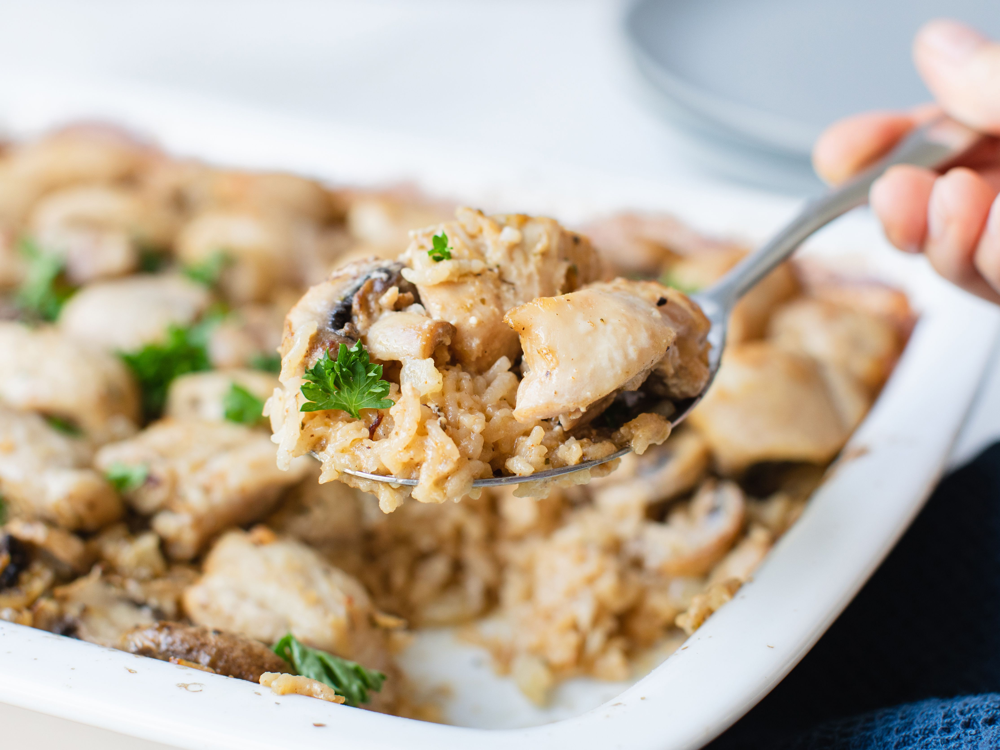

Chicken and Rice Casserole

Description
This simple, affordable, and absolutely irresistible meal will warm you up from the inside out.
A hot dish baked with chicken, rice, and vegetables that can comfortably serve 6 people!
Ingredients
- 3 chicken breasts, cut into cubes
- 2 cups water
- 2 cups instant white rice
- 1 (10.75 ounce) can cream of chicken soup
- 1 (10.75 ounce) can cream of celery soup
- 1 (10.75 ounce) can cream of mushroom soup
- salt and ground black pepper to taste
- 1/2 cup butter, sliced into pats
Directions
- Preheat oven to 400 degrees F (200 degrees C). Grease sides and bottom of a casserole dish.
- Stir chicken, water, rice, cream of chicken soup, cream of celery soup, and cream of mushroom soup together in the prepared casserole dish.
- Season with salt and pepper. Arrange butter evenly over the top of the chicken mixture.
- Bake in preheated oven until the rice is tender and the chicken is cooked through, 1 hour to 75 minutes.
- Cool 10 to 15 minutes before serving.
Return to Recipes